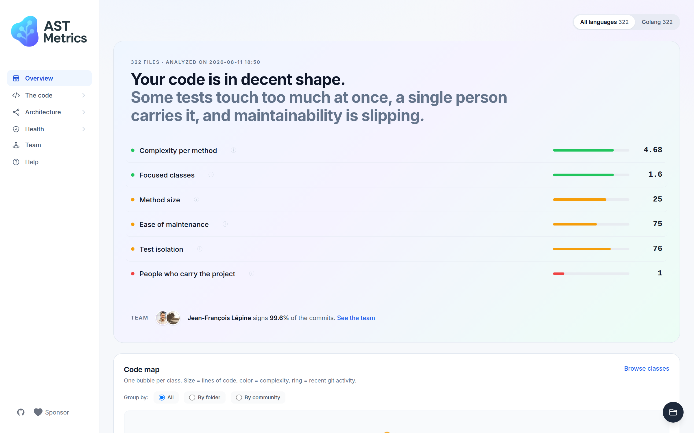

AI writes code faster than you can review it.
Catch what got worse, in seconds.
AST Metrics measures complexity, coupling, architecture, bus factor and test
quality for PHP, Go, Python, Rust, Java, C# and TypeScript. On a pull request,
ast-metrics review flags only what got worse. No server, no noise,
same code, same verdict.
Install with brew npx pipx curl composer docker go
The whole tool is a single self-contained binary.
brew install ast-metrics/tap/ast-metrics
- No runtime, no dependencies
- Analysis runs locally
One command
Run it once.
Read your project like a map.
ast-metrics analyze --report-html=report . builds this report:
a plain-language verdict, then every metric behind it.

Want to see it on real code first? Try it online, nothing to install.
What it measures.
Architecture map
Communities, layers and cycles, detected from real dependencies. Not the architecture you drew, the one you have.
Bus factor
Find the files only one person can touch, before that person leaves.
Risk hotspots
Complexity crossed with change frequency. The few files where bugs actually live.
Coupling
Afferent, efferent, instability. Keep packages easy to change in isolation.
Test quality
Isolation, traceability, god tests and orphan classes. Tests that actually protect you.
Rules and gates
Declare limits in .ast-metrics.yaml. Baseline the past, block only regressions.
Continuous integration
One line of YAML,
zero noise in your reviews.
On every pull request, the action runs ast-metrics review and
comments with only the new or worsened findings. Legacy code stays quiet,
and fail-on decides what blocks the merge.
MCP server
Your metrics, readable by AI agents.
The built-in MCP server lets Claude, Cursor and other coding agents query
complexity, coupling and architecture directly. Start it with
ast-metrics mcp and you are done.
Curious what these metrics actually mean?
Every metric has its own page: what it measures, how to read it, and how to improve it. Or learn by doing: the tutorial walks you through a real analysis of Monolog, number by number.
Explore the metrics guideTen minutes to spare? Follow the hands-on tutorial